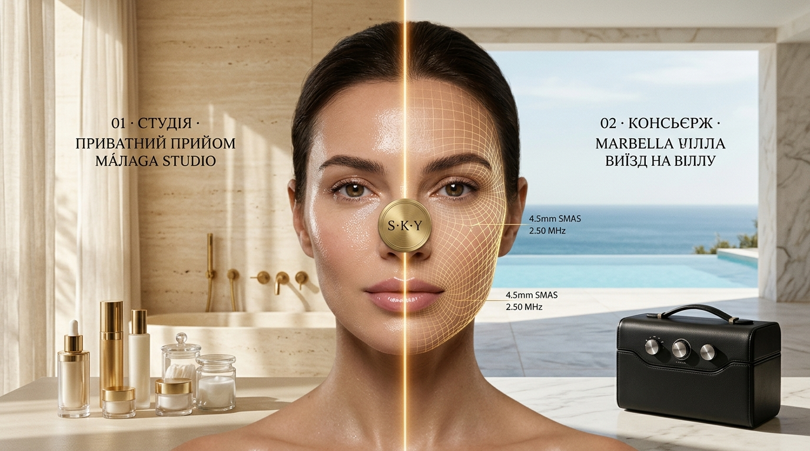

Концепт 01 · Світла Палітра (Travertine Dawn)
Світлий Травертин & Ранкове Середземноморське Сонце
Зліва (Малага Студія): Теплий вапняковий травертин, м'яке ранкове світло крізь лляні штори, латунь, флакони з оліями та соковита сяюча Glass Skin.
Справа (Марбелья Консьєрж): Відкрита тераса вілли над блакитним морем, інфініті-басейн, шкіряний кейс та точна золота SMAS-сітка (4.5mm SMAS, 2.50 MHz).